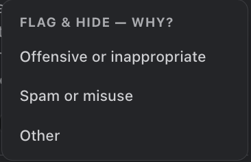
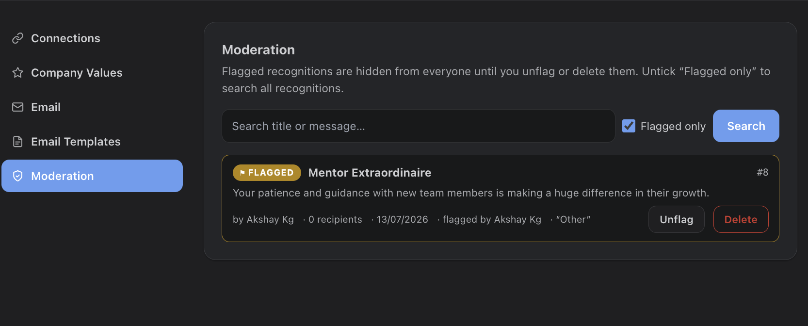

Flagging
Every card has a flag button (flag icon). Any user can flag a recognition as potentially offensive, picking a reason (offensive/inappropriate, spam, other). A flagged recognition is hidden from everyone immediately — the mural and deep links both treat it as under review.

Review Queue
Admins resolve flags under Settings > Moderation. The queue shows each flagged card with its author, recipients, date, who flagged it, and the reason. Unflag restores it everywhere; Delete removes it permanently along with its reactions and comments.

Finding Any Recognition
The same screen searches all recognitions by title or message (not just flagged ones), so admins can locate and remove any post on request.